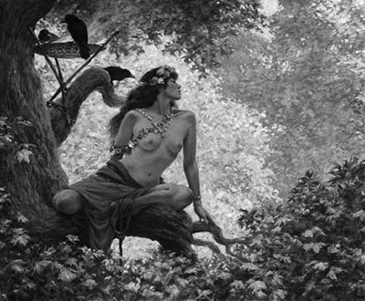

Akdeniz coğrafyasındaki bütün bitkiler, özellikle ağaçlar, insan gibi canlı varlıklar olarak algılanageldi hep... Çünkü onların gövdelerinde ve yapraklarında, Driyadlar denen perikızları yaşardı. Bu güzel mi güzel perikızları, bedenlerinde bulundukları ağaçlarla birlikte yaşar ve bütün canlılar gibi günü geldiğinde toprağa karışıp özsuya dönüşürlerdi. Sonra da onu kökleriyle emen diğer bitkilerin bedenlerine geçerlerdi yeniden... Böylece Driyadlar; bedenden bedene geçerekten yaşamlarını sonsuzca sürdürüp giderlerdi...
Geceleri karanlık iyice bastığında onlar, yaşadıkları o gür ormanlardaki ağaç bedenlerinden ayrılıp el ele tutuşurlar, birlikte söyledikleri çok ince ve dokunaklı bir ezginin eşliğinde oyunlar oynar ve yaşam denen o evrensel hazineyi, ürpertici bir sevinç çığlığına dönüştürürlerdi... Sonra da ayrıldıkları ağaçların ve bitkilerin bedenlerine yeniden dönerlerdi... O yüzden insanlar gibi aşkları, sevinçleri ve gözyaşları olan ağaçların ve büyük ormanların bol olduğu Akdeniz ülkeleri; bütün canlılarda var olan yaşama sevincini dillendiren tiyatrolar ve stadyumlarla dolup taşıyordu... Çünkü Akdeniz coğrafyasındaki dağlardan denizlerden yaşama sevinci püskürürdü hep! Gene o yüzden soylu ozanların alınlarını defne dalından, yengi kazanmış sporcularınkini ise zeytin dalından çelenklerle süslerdi oralı halklar...
Zaten ağaçların dilini anlayanlar, onlara balta vurulduğunda Driyadların kanlarının aktığını, ağlayıp inlediklerini rahatça görüp duyabilirlerdi! O yüzden ormanlar ta eski çağlardan beri, barış içinde, kardeşçe yaşayan mutlu halkların simgeleri olarak algılanageldi hep. Buna karşın Mısır coğrafyasında örneğin, orman yokluğu yüzünden, yaşam sevinci ve ölümsüzlük; mumyalanıp mezarlara, ehramlara gömülmüştü hep...
İşte bu bağlamda, Akdeniz ülkelerinin birinde bir zamanlar Kliti (Klity) adındaki güzel mi güzel bir kızın serüvenleri, hep dilden dile dolaştı. Kliti, çok zaman tek başına, evlerine yakın tarlalara gidip oralarda gezer tozar; çiçeklerle böceklerle oynaşır, sonra da çimlerin üzerine uzanıp gün boyu gökyüzünde tanrı Helyos'un atlı arabasıyla koşturduğu güneşi izlerdi... Çünkü güneşe ve onun ışığına tapıyordu Kliti. Onsuz bir dünyanın varolamayacağını duyumsuyordu iliklerine dek. Ne var ki uzun süre bakamıyordu gökyüzüne; çünkü gözleri yanıp sulanıyordı o renk renk ışık hengâmesinden...
Bir gün Kliti, çok sevdiği güneşin atlı arabasında tanrı Apollon'un da oturduğunu öğrendi sabah yıldızından... Buna çok sevinen Kliti, o gün hep güneşin arabasını ve orada oturan tanrı Apollon'u izledi... Bu arada Kliti'ye tutulan Apollon da, kendisini gökyüzünde izlerken onun gözlerini yakıp sulandırmaz oldu. Ve sık sık tanrı Helyos'la birlikte aynı arabada, güneşi gökyüzünde koşturmaya başladı Apollon. Böylece Kliti de artık her gün gözleriyle tanrı Apollon'u akşama dek güneşin arabasında izliyor ve karşı dağın arkasına çekip giderken, ertesi sabah buluşmak üzere eliyle vedalaşıyordu.
Bir süre sonra Kliti'ye sırılsıklam tutulan ışık tanrısı Apollon da, hep beni gözleriyle izlesin diye bu güzel sarışın kızı, sapsarı bir çiçeğe dönüştürüverdi!.. Ve bu güzel sarı çiçeğe, "güneşçiçeği" adını taktı yöre halkı. Ama kimileri de "ayçiçeği" ya da "gündöndü" diyordu... İşte bu sarı çiçek, ta o zamandan beri güneşten yüzünü ve gözlerini ayıramaz oldu... Artık gökyüzünde güneşin arabası hangi yörüngede koşuyorsa, o da o yöne dönüp onu hep başıyla ve bakışlarıyla izliyordu...
Gene bu güzeller güzeli Kliti'nin dillerden düşmeyen serüvenine benzer bir serüven yaşadı Driyope ile İole adlı iki güzel kız kardeş... Driyope evliydi ve bir de bebeği vardı. Bir gün bu iki kız kardeş, bebekleriyle birlikte köyün ortak pınarına su almaya, biraz gezip tozmaya çıktılar... Pınara geldiklerinde kucağındaki bebeğiyle oynarken Driyope, yanında tepeden tırnağa çiçek açmış limon ağacından bir dalı, ne yaptığının bile ayırdında olmadan çekip koparıverdi! Ne var ki dalın koptuğu yerden ağacın kanı olan özsuyun damla damla akmaya başladığını görünce, eli ayağı birbirine dolaştı! Çünkü ağacın bedeninde yaşayan perikızı Driyad'ın çığlığını da duymuştu... Haliyle korkuya kapılıp kucağındaki bebeğiyle canhıraş koşarken, bir süre sonra aniden toprağa gömülmeye başladığını sezinledi. Bir eliyle bebeğini sıkıca tutmaya çalışırken öteki eliyle de; "Eyvah, ben ne yaptım?" diye saçını başını yoluyordu... Ne var ki eline bakınca saç yerine bir tutam limon yaprağı gördü avucunda... Ağlayan bebeğini emzirmek isteyince de memelerinin katılaştığını ve sütünün kesildiğini anladı! Yanına koşarak gelen kız kardeşi İole; gittikçe dal budak sarıp ağaçlaşan kız kardeşine sarılıp hıçkıra hıçkıra ağlamaya başladı. Az sonra da bütün bedenini bir kabuk tabakası sardı Driyope'nin... Zar zor; "Hiç de günahım yok benim!" diye bir şeyler söylemeye çalıştı... "Çocuğumu alın hemen! Bir süt nineye verin. Sık sık onu dallarımın altına getirin. Gölgemde koşup oynasın; burada yanımda büyüsün!.. Ama ağaçların dallarını, yapraklarını koparmasın sakın! Onlar da benim gibi bir anadır." Sözlerinin burasında sustu... Çünkü yüzünü, dudaklarını bir kabuk sarıp kapatmıştı!..
Driyope artık arkadaş edindiği bütün ağaçlarla ve bedenlerinde yaşayan Driyadlarla birlikte kardeşçe yaşayıp gidiyordu.
Gene Driyope, gölgesinde bütün çocuklar güle oynaya büyüsünler, kardeşçe yaşamayı öğrensinler diye yapraklarını avuç içi gibi açıp günışığıyla besleniyor; renk renk çiçeklerle, çeşit çeşit meyvelerle donanıyordu... Kardeş edindiği bütün ormanların ağaçları gibi...

Ağaç perileri Driyadlar